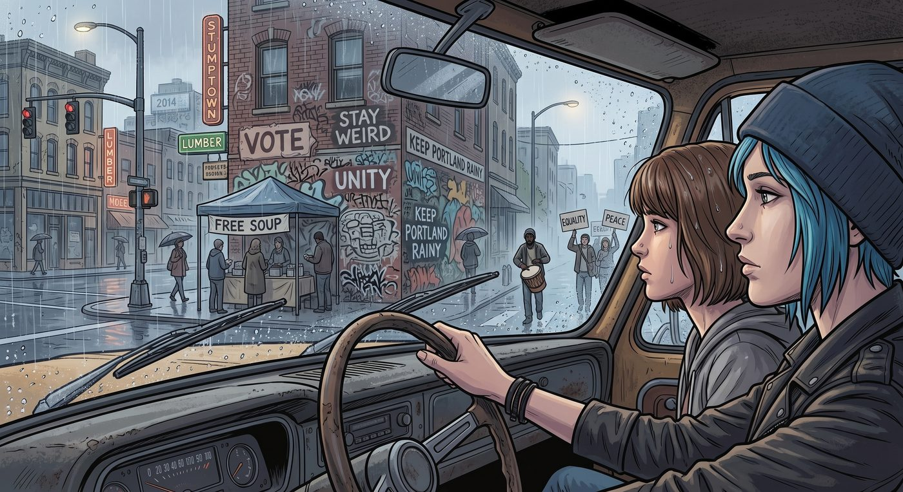

波特蘭

皮卡車開進波特蘭市區的時候,天正在下一種介於雨和霧之間的細雨。街角有人在發免費的湯,牆上到處是塗鴉和標語,遠處隱約傳來鼓聲——像是某種永遠不會結束的遊行。
Chloe 把車停在路邊,透過擋風玻璃看著這一切,吹了聲口哨。
「比阿卡迪亞灣有意思多了。」
Max 抱著相機,已經在想第一張照片要拍什麼。
她們不知道,自己正要一頭栽進這輩子最溫暖、也最痛的一段經歷。
一、找到的家人
第一晚,她們就在一間占屋改建的社區中心過夜。屋子很舊,暖氣時好時壞,但擠滿了人——有人在煮一大鍋豆子湯,有人在教小孩寫功課,牆角堆著要送去街區的毛毯和藥品。
一個叫 Rosa 的女人注意到皮卡車上堆的工具箱,直接問 Chloe:「妳會修東西?」
「算是。」
「太好了,三號屋的水管漏了兩個禮拜,沒人修得好。」
半小時後,Chloe 整個人鑽到水槽底下,滿手油污,罵罵咧咧地擰螺絲,旁邊圍了七八個人看她修,遞工具、遞水、還有人蹲下來幫她照手電筒。修好的那一刻,所有人鼓掌歡呼,有個小男孩抱住她的腿說謝謝。
Chloe 從水槽底下爬出來,滿臉油污,愣了一下才笑出來。
「這他媽是什麼感覺?」她小聲跟 Max 說,聲音有點抖,「我這輩子除了妳,沒幾個人會為我鼓掌。」
Max 舉起相機,拍下了那一刻——不是抗議標語,不是烈焰街景,而是一群陌生人蹲在漏水的水管旁邊笑成一團的畫面。她後來會反覆想起這張照片。
Rosa 拍拍 Chloe 的肩膀:「這裡就是這樣。妳今天幫我們修水管,明天我們幫妳擋子彈。」
Chloe 那天晚上破天荒沒抽煙,只是靠在 Max 身邊,看著滿屋子的陌生人,第一次覺得自己不是那個被小鎮拋棄、被繼父監視、被朋友一個個死去或離開的女孩——她是這裡的一份子。
Max 在日記裡寫:這是我見過最不加修飾的善良。沒有攝影機,沒有標語牌,只有真的在乎彼此死活的人。
二、裂縫
第九天,社區中心開會。
議題是要不要在下一波行動中,優先保護街角那間越南移民開的雜貨店——上一輪衝突裡,店面被砸了,老闆娘一家人躲在後面地下室發抖了整晚。
一個叫 Marcus 的男人提出:「我們應該劃出保護名單,標記出哪些是社區自己人開的店,行動的時候繞開。」
台上主持會議的核心成員之一——一個大家都叫她「大姐頭」、名叫 Dana 的女人——臉色沉了下來。
「Marcus,你這是在替資本主義的私有財產概念背書。」
「我是在說,老闆娘一家人上禮拜嚇到尿褲子,Dana。」
「個人的恐懼不能凌駕於集體鬥爭的必要性之上。」Dana 的聲音提高了,「你這種想法,本質上是改良主義,是想在體制內修修補補,而不是真正推翻它。」
會議室安靜了幾秒。Chloe 坐在後排,原本以為會有人反駁,結果沒有——大家都低下頭,沒人敢再說話。
Marcus 還想再說什麼,卻被打斷:「我覺得我們需要重新評估 Marcus 的定位。他最近的發言,聽起來越來越像是在替壓迫者說話。」
一個原本笑著的年輕女生,臉色瞬間變了,像是終於想起自己該站在哪一邊,跟著點頭附和。
Chloe 感覺胃裡一陣發緊——她認得這種眼神。
那是 Nathan Prescott 甩巴掌給跟班看,確認沒人敢反抗時,眼睛裡的那種光。
三、名單
接下來的兩個禮拜,Chloe 眼睜睜看著 Marcus 從「大家都喜歡的修理工」,變成會議記錄裡「立場搖擺、需要觀察」的名字,再變成沒有人敢單獨跟他說話的人。
沒有人動手打他。沒有人明著趕他走。
但每次分配物資,他排在最後。每次有人在會議上提起他的名字,語氣都帶著一種「我們都知道他有問題」的默契冷笑。三個禮拜後,Marcus 自己收拾東西走了,沒有人送他,也沒有人再提起他。
Chloe 去找 Dana,想問清楚。
「他做錯什麼了?」
「Chloe,」Dana 的語氣像在教訓一個不懂事的孩子,「有些人就是沒辦法真正理解鬥爭需要犧牲。妳應該多花時間跟真正堅定的同志在一起,少跟動搖分子往來——包括妳那個攝影師朋友,她拍的照片太『中立』了,運動需要的是立場鮮明的紀錄者。」
Chloe 站在原地,忽然想起繼父 David 那句總被她嫌煩的話:「規矩是死的,但至少我告訴妳規矩是什麼。」
至少 David 從來沒有假裝自己是聖人。
四、真相被退回
Max 那幾天一直在整理她拍的照片,想投給一份地下小報,記錄整個社區從互助到現在的變化——包括 Marcus 被架空的過程,包括那場會議上沒人敢反駁的沉默。
她把照片和文字稿交給負責小報的人。三天後,稿子被退回來,附了一張便條:
「內容不利於運動團結,建議刪除涉及內部矛盾的部分。附上的替代版本,把 Marcus 的離開描述為『主動選擇退出,追求個人道路』。」
Max 拿著那張便條,在占屋外的階梯上坐了很久。
Chloe 找到她的時候,她還握著那張紙。
「他們把真相改了。」Max 的聲音很平靜,平靜得讓人心疼,「不是他們沒看到真相,Chloe。是他們看到了,然後決定印一個假的出去。」
Chloe 在她身邊坐下,沒說話。
「我不是因為他們用暴力離開的。」Max 終於抬起頭,眼睛有點紅,「我是因為我親眼看到,他們昨天還在教我怎麼幫傷患止血,今天就因為一句意見不合,把同一個人的名字劃掉。這比 Jefferson 更讓我毛骨悚然——因為 Jefferson 至少知道自己是惡魔。這些人以為自己是聖人。」
五、離開
她們沒有大吵大鬧地退出。Chloe 只是在某個清晨,把工具箱搬回皮卡車上,跟幾個還算熟的鄰居道別——那些真正修過水管、煮過湯、半夜輪班站崗的人,那些從頭到尾沒有參與過任何一場「審判」的普通人。
「妳要走?」Rosa 在門口問她。
「嗯。」Chloe 頓了一下,「妳修的湯還是最好喝的,Rosa。這裡有妳這樣的人,我很慶幸認識妳們。」
Rosa 看著她,眼神複雜,像是也想說什麼,卻沒有說出口——她大概也看見了那份被退回的稿子,只是沒有 Max 那樣的立場可以離開。
Chloe 沒有再多說。這不是一個關於誰對誰錯的故事,是一個關於「善良的人被困在一個開始腐爛的系統裡」的故事,而她和 Max 只是恰好有一輛皮卡車,可以選擇離開。
六、公路上
雨停了。皮卡車開上高速公路,後照鏡裡的波特蘭漸漸縮小。
Chloe 點了根煙,搖下車窗,一言不發地開了很久。
「妳還好嗎?」Max 終於問。
「不知道。」Chloe 的聲音有點啞,「我這輩子第一次覺得自己屬於一個地方,結果那個地方原來也會把人變成名單上的一行字。」
她把煙灰彈出窗外,眼睛盯著前方的公路。
「我不恨他們,Max。這才是最操蛋的地方——Rosa 是真心的,那個煮湯的老頭是真心的,幫我照手電筒的小孩也是真心的。爛掉的不是那些人,是那套讓人可以正大光明審判別人、還覺得自己在做對的事的邏輯。」
Max 靠在椅背上,看著窗外飛逝的樹林。
「我以前覺得,只要找到夠多相信同一件事的人,就不會孤單。」她說,「現在我覺得,真正重要的從來不是信念一不一致,是那個人願不願意在妳說出不同意見的時候,還把妳當人看。」
Chloe 沉默了幾秒,伸手過去,不太熟練地拍了拍 Max 的手背——這是她表達情緒最笨拙也最真誠的方式。
「至少妳一直把我當人看。就算我把事情搞得一團糟。」
「妳沒有把事情搞得一團糟。」Max 反手握住她的手,「妳只是,終於知道自己真正在乎的是什麼了。」
皮卡車繼續往東開,波特蘭的雨和標語留在了後視鏡裡。前方是山,是更長的公路,和一個她們還不知道會有多瘋狂的、叫做希望郡的地方。
但那是另一個故事了。